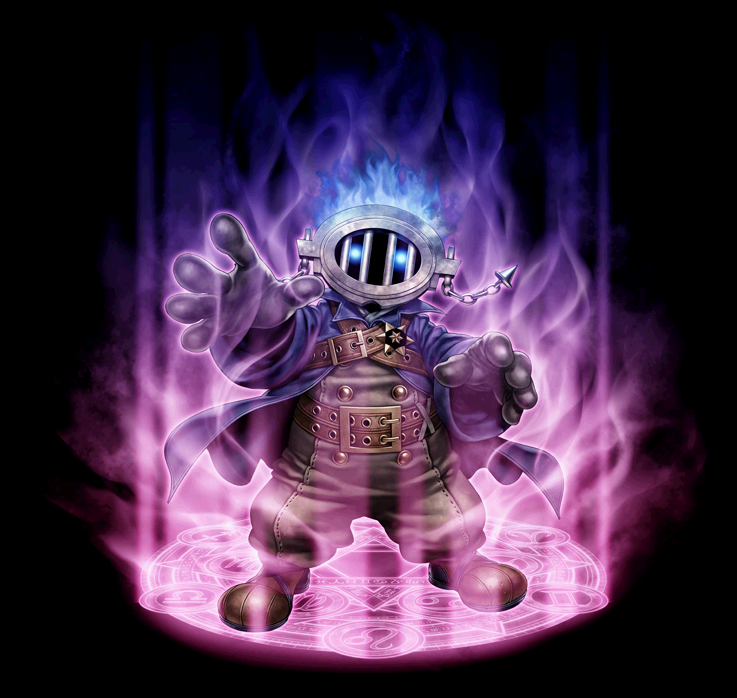
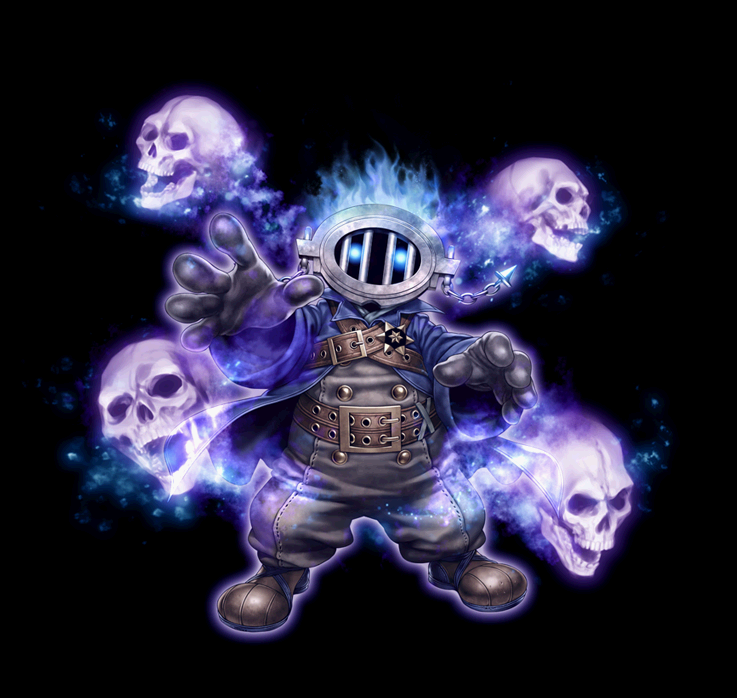

2024/06/22～ ネクロマンサー 覚醒スキル一覧
2024/06/22アプデ によるネクロマンサー大改変を反映。
[通常スキル]
[改変前ページ] → 2020/02/19～ ネクロマンサー 覚醒スキル一覧
ストレンジコンジュラー
ウィキッドサイコロジスト
デモニックチューナー
※ほぼ全てのスキルが大きく変更されたため、変更箇所の色付けは行いません。
ストレンジコンジュラー
| ストレンジコンジュラー | |||||||
|---|---|---|---|---|---|---|---|
 |
|||||||
| [専用パッシブ] 墓の王 | |||||||
|
|
スキル説明 | 自身の物理治癒力と物理強打関連の数値を強化し、召喚獣の魔法治癒力・魔法強打関連の数値に変換する。 |
|||||
| スキル効果 |
- 物理治癒発動時 体力回復 +100% - 物理治癒ダメージ +50% - 大型クリティカルダメージ +100% - 物理強打発動時 体力回復 +100% - 物理強打ダメージ +100% |
||||||
ウィキッドサイコロジスト
デモニックチューナー
| デモニックチューナー | |||||||
|---|---|---|---|---|---|---|---|
 |
|||||||
| [専用パッシブ] 血の繋がり | |||||||
|
|
スキル説明 | 体力を消耗してスキルを使用すると、召喚された幻影がそのダメージを代わりに受ける。 体力割合数値も幻影の体力に従う。 |
|||||
| スキル効果 |
- 敵討ち時、体力 10% 回復 - 体力を消耗するスキル使用時、レベルペナルティの体力数値を反映し、体力が消耗されない |
||||||